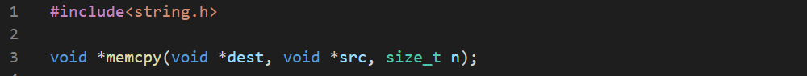

"C" programming language offers a wide range of functions to manipulate memory. We can divide them into four groups.- Copying
- Settings
- Comparing
- Searching
These treat memory as a contiguous set of bytes and can't distinguish between statically and dynamically allocated memory and don't notice boundaries and variable sizes. This makes them very powerful and very dangerous.
The most basic function is memcpy() which copies n bytes from source to destination and returns nothing.

Here's an example.


The memcpy() can do much more like copying structures and even arrays of structures.


We can even copy a part of the memory.


But memcpy() acts strangly when the source and destination overlaps. That's why we use memmove(). It's the same as memcpy() but can detect when memory blocks overlap.

Let's test it.


The memccpy() can't detect overlapping blocks, but stops immendiately after any of the copied bytes is equal to c.

This function returns the pointer next to c.


But,


Though the array doesn't have a zero, then why it stopped? Because it found a byte which is zero. That's because of the little endian processor.
The memset() sets a memory block with a byte of a chosen value.

The function uses c as unsigned char, not int. This function returns nothing.
A simple example would be-


But if we try to fill in ints we get-


The short int takes two bytes of memory but the second argument is char type which takes one byte. So, writing 1 in each byte results in 0x0101 in short int which is equal to 257 in decimal.
There's a function bzero() to set all of memory to zero, but that is not a standard function.
The memcmp() is used to compare two memory blocks byte by byte. The function returns 0 when identical, positive when s1 is greater than s2 and negative oterwise.

There's no way to know which byte is different. This function can be used to any type of data.
The memchr() function scans the first n bytes pointed by s, searching for c. The c is treated as an unsigned char. The function returns a pointer to a byte containing c and NULL otherwise.

Some of the "C" language implementations include a function named memrchr() which does the same thing but starts from the end of the block. The functin is not a part of "C" language standard.